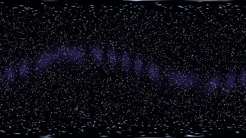

HomeAccueil / ExamplesExemples
360° starry skyCiel étoilé à 360°
Stars drawn at random per direction cell, the milky way as a bright band; mainVR receives the ray direction.Étoiles tirées au hasard par cellule de direction, voie lactée en bande lumineuse ; mainVR reçoit la direction du rayon.

CategoryCatégorie: VRVR - ciel_etoile_vr.glsl - 21 lineslignes - File on GitHubFichier sur GitHub
In the program: Examples, choose it, Add to the list. Or copy the code into a file next to the program and drop it on the window.Dans le programme : Exemples, choisissez-le, Ajouter à la liste. Ou copiez le code dans un fichier et glissez-le sur la fenêtre.
CodeCode
ciel_etoile_vr.glsl
// SPDX-License-Identifier: GPL-3.0-or-later
// Copyright (C) 2026 Patrick JAILLET
// fr: Ciel étoilé à 360° — Étoiles tirées au hasard par cellule de direction, voie lactée en bande lumineuse ; mainVR reçoit la direction du rayon.
// en: 360° starry sky — Stars drawn at random per direction cell, the milky way as a bright band; mainVR receives the ray direction.
float h(vec3 p) { return fract(sin(dot(p, vec3(127.1, 311.7, 74.7))) * 43758.5453); }
void mainVR(out vec4 fragColor, in vec2 fragCoord, in vec3 ro, in vec3 rd) {
vec3 col = vec3(0.0, 0.0, 0.02);
for (int l = 0; l < 3; l++) {
vec3 p = rd * (40.0 + 30.0 * float(l));
vec3 id = floor(p);
vec3 c = id + 0.5 + (vec3(h(id), h(id + 1.0), h(id + 2.0)) - 0.5) * 0.6;
float d = length(normalize(c) - rd);
col += step(0.93, h(id + 5.0)) * smoothstep(0.012 / (1.0 + float(l)), 0.0, d) * vec3(0.8, 0.9, 1.0);
}
float band = exp(-pow(dot(rd, normalize(vec3(0.3, 1.0, 0.2))) * 5.0, 2.0));
col += band * vec3(0.15, 0.1, 0.25) * (0.6 + 0.4 * sin(rd.x * 20.0 + iTime * 0.1));
fragColor = vec4(col, 1.0);
}